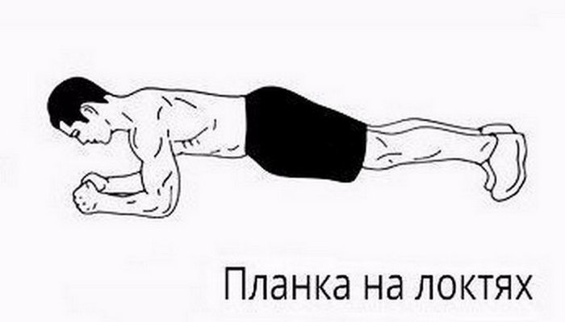

Планка

Классическая планка относится к тем упражнениям, которые задействуют и
оказывают большую нагрузку на основные мышцы нашего тела. На первый взгляд
упражнение может показаться простым – но вы только попробуйте
Примите упор лежа, опираясь на предплечья.Руки поставьте на ширине плеч.
Держите тело над поверхностью пола, не поднимая таз вверх. Пресс должен быть
напряжен, плечи расслаблены, а спина – оставаться ровной. Ваше тело должно
составлять неподвижную линию.Держите положение так долго, как сможете. Начинайте
с 20-30 секунд, постепенно увеличивая время.